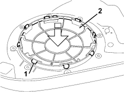

7005E22 L/H OR R/H FRONT DOOR PANEL RADIO GRILLE (ONE) - R+R
- Path
- Procedures > 70 FITTINGS > 7005 PASSENGER COMPARTMENT FRONT SIDE DOORS > 7005E FRONT DOOR TRIM > 7005E22 L/H OR R/H FRONT DOOR PANEL RADIO GRILLE (ONE) - R+R
- Kind
- repair procedure (removal / refitting; the operation number is the code)
- Applies to
- all engines; all production periods
- Interactive page
- https://sloeber94.github.io/elrnDB-fCrm/en/#/194000869
Applies to: all engines; all production periods
 Removing
Removing
 Refitting
Refitting- Open the front side door.
- Turn the ignition key to the OFF position.
- Disconnect the negative battery terminal.
Description | Connector | |
|---|---|---|
BATTERY |
Op. 7005E12 CORNER COVER FOR ONE FRONT SIDE DOOR, LH OR RH - R.R.
Op. 7005E14 TOP COVER OF FRONT SIDE DOOR INNER PANEL - R R OR REPLACE
For the driver's side door only
Op. 7005M14 SWITCH UNIT ON DRIVER'S FRONT DOOR - R.R.
For the passenger side door only
Op. 7005M12 PASSENGER SIDE FRONT DOOR ELECTRICALLY OPERATED WINDOW SWITCH - R.R.
For both
Op. 7005E10 FRONT SIDE DOOR INTERIOR PANEL - R.R.
1. Place the inner panel on a work bench then, working on the rear part of the panel, lift up all the retaining tabs.
2. Push downwards and remove the grille from the front part.

Applies to: all engines; all production periods
Refitting
Removing- Fit a new grille taking care to ensure that it is correctly positioned and fold over the retaining tabs.
Op. 7005E10 FRONT SIDE DOOR INTERIOR PANEL - R.R.
For the passenger side door only
Op. 7005M12 PASSENGER SIDE FRONT DOOR ELECTRICALLY OPERATED WINDOW SWITCH - R.R.
For the driver's side door only
Op. 7005M14 SWITCH UNIT ON DRIVER'S FRONT DOOR - R.R.
For both
Op. 7005E14 TOP COVER OF FRONT SIDE DOOR INNER PANEL - R R OR REPLACE
Op. 7005E12 CORNER COVER FOR ONE FRONT SIDE DOOR, LH OR RH - R.R.
- Connect the negative battery terminal.
Description | Connector | |
|---|---|---|
BATTERY |
Topics linked from this page (6)
- 7005E10 FRONT SIDE DOOR INTERIOR PANEL - R.R.
- 7005E12 CORNER COVER FOR ONE FRONT SIDE DOOR, LH OR RH - R.R.
- 7005E14 TOP COVER OF FRONT SIDE DOOR INNER PANEL - R R OR REPLACE
- 7005M12 PASSENGER SIDE FRONT DOOR ELECTRICALLY OPERATED WINDOW SWITCH - R.R.
- 7005M14 SWITCH UNIT ON DRIVER'S FRONT DOOR - R.R.
- A001 BATTERY